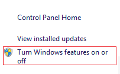

Laborator 06. Comunicația prin Sockeți TCP
Realizarea Conexiunii între o Mașină Fizică și Dispozitivul Mobil
Pentru a putea comunica prin intermediul unui socket TCP, o mașină fizică și dispozitivul mobil trebuie să se găsească în aceeași rețea, astfel încât adresele IP ale acestora să fie vizibile între ele.
Dispozitiv Fizic
O mașină fizică și un dispozitiv fizic pot comunica:
- prin plasarea lor în aceeași rețea fără fir (WiFi), având adresele IP furnizate de un server DHCP ce rulează pe un router;
- prin stabilirea unei legături punct la punct, folosind Bluetooth;
- printr-o conexiune de date realizată prin intermediul portului USB.
Pe telefon, se accesează Settings → Wireless & Networks → Tethering & portable hotspot și se selectează opțiunea USB Tethering

Astfel, se va activa (în mod automat) interfața rndis0, pentru care se poate determina adresa Internet:
student@eim2016:/opt/android-sdk-linux/platform-tools$ ./adb devices List of devices attached 0019531d59461f device student@eim2016:/opt/android-sdk-linux/platform-tools$ ./adb -s 0019531d59461f shell shell@n7000:/ $ su su shell@n7000:/ # ifconfig rndis0 ifconfig rndis0 rndis0: ip 192.168.42.129 mask 255.255.255.0 flags [up broadcast running multicast] shell@n7000:/ #
student@eim2016:/opt/android-sdk-linux/platform-tools$ ./adb devices List of devices attached 0019531d59461f ???????????? student@eim2016:/opt/android-sdk-linux/platform-tools$ sudo ./adb kill-server student@eim2016:/opt/android-sdk-linux/platform-tools$ sudo ./adb start-server student@eim2016:/opt/android-sdk-linux/platform-tools$ sudo ./adb devices List of devices attached 0019531d59461f device
Pentru dispozitivele care nu permit conectarea cu adb shell în modul tethering se aplică soluția prezentată pe stackoverflow: trebuie creat în Ubuntu fișierul /etc/udev/rules.d/51-android.rules și adăugat codul obținut cu lsusb pentru fabricantul telefonului. Odată dispozitivul de rețea obținut (de exemplu rndis0), se folosește dhclient rndis0 pentru a obține o adresă IP de la telefon.
Pe Windows, dacă dispozitivul mobil nu este detectat, poate fi necesară instalarea unor drivere suplimentare pentru stabilirea legăturii prin intermediul portului USB.
Ulterior, se determină adresa Internet a mașinii fizice, asociată interfeței usb0 (Linux), respectiv Ethernet (Windows).
|
Linux student@eim2016:~$ sudo ifconfig usb0
usb0 Link encap:Ethernet HWaddr 32:ca:4b:1c:ff:7b
inet addr:192.168.42.170 Bcast:192.168.42.255 Mask:255.255.255.0
inet6 addr: fe80::30ca:4bff:fe1c:ff7b/64 Scope:Link
UP BROADCAST RUNNING MULTICAST MTU:1500 Metric:1
RX packets:109 errors:0 dropped:0 overruns:0 frame:0
TX packets:319 errors:0 dropped:0 overruns:0 carrier:0
collisions:0 txqueuelen:1000
RX bytes:24103 (23.5 KiB) TX bytes:64369 (62.8 KiB)
|
Windows C:\Program Files (x86)\Android\android-sdk\platform-tools>ipconfig Windows IP Configuration Ethernet adapter Local Area Connection: Connection-specific DNS Suffix . : Link-local IPv6 Address . . . . . : fe80::18bf:d0be:3625:6b1%44 IPv4 Address. . . . . . . . . . . : 192.168.42.81 Subnet Mask . . . . . . . . . . . : 255.255.255.0 Default Gateway . . . . . . . . . : 192.168.42.129 |
Dispozitiv Virtual (Emulator)
Genymotion
Fiecărui dispozitiv virtual Genymotion îi este alocată în mod automat o adresă IP de către serverul DHCP configurat pe mașina virtuală VirtualBox în cadrul căruia rulează.
Implicit, este utilizat spațiul de adrese 192.168.56.1/24:
- mașina fizică (default gateway) are adresa
192.168.56.1; - pentru dispozitivele virtuale sunt alocate adrese în intervalul
192.168.56.101..192.168.56.254.
Configurarea spațiului de adrese care este folosit poate fi configurat prin intermediul VirtualBox, accesând File → Preferences → Network → Host Only Networks


Adresa IP care a fost atașată fiecărui dispozitiv virtual Genymotion poate fi verificată:
- folosind comanda
adb devices;student@eim2016:/opt/android-sdk-linux/platform-tools$ ./adb devices List of devices attached 192.168.56.101:5555 device
- prin intermediul plugin-ului Genymotion pentru mediile integrate de dezvoltare.

Conectivitatea dintre mașina fizică și dispozitivul virtual poate fi verificată folosind comanda ping.
student@eim2016:~$ ping 192.168.56.101
Pinging 192.168.56.101 with 32 bytes of data:
Reply from 192.168.56.101: bytes=32 time<1ms TTL=64
Reply from 192.168.56.101: bytes=32 time<1ms TTL=64
Reply from 192.168.56.101: bytes=32 time<1ms TTL=64
Reply from 192.168.56.101: bytes=32 time<1ms TTL=64
Ping statistics for 192.168.56.101:
Packets: Sent = 4, Received = 4, Lost = 0 (0% loss),
Approximate round trip times in milli-seconds:
Minimum = 0ms, Maximum = 0ms, Average = 0ms
Android Virtual Device
Fiecare instanță a unui dispozitiv virtual Android oferă o pereche de porturi pentru diferite conexiuni:
- un port de consolă, prin intermediul căruia este permis accesul prin telnet pentru execuția de diverse comenzi;
- un port pentru
adb.
Numerele folosite pentru aceste porturi sunt succesive. Implicit, numerotarea porturilor începe de la 5554 (portul de consolă) / 5555 (portul adb). Determinarea portului poate fi realizată:
- prin inspectarea ferestrei în care este afișat emulatorul, având forma Android Emulator (55nr), unde nr poate lua valori cuprinse între 54 și 87 (doar valori impare - pentru portul de consolă, valorile pare fiind rezervate pentru portul adb); astfel, sunt suportate maxim 16 instanțe de dispozitive virtuale Android simultan;

- prin rularea comenzii
adb devicesstudent@eim2016:/opt/android-sdk-linux/platform-tools$ ./adb devices List of devices attached emulator-5554 device
Conectarea la consola dispozitivului virtual Android se face prin comanda:
student@eim2016:~$ telnet localhost 55nr
specificându-se portul pe care rulează emulatorul.
În consolă, realizarea unei legături între mașina fizică și dispozitivul virtual Android se face prin redirectarea portului, folosind comanda redir, aceasta suportând mai multe opțiuni:
list;add;del.
| OPȚIUNE | DESCRIERE |
|---|---|
list | afișează toate redirectările de port folosite la momentul respectiv |
add <protocol>:<port_masina_fizica>:<port_dispozitiv_virtual> | adaugă o redirectare de port ✔ <protocol> poate avea doar valorile tcp sau udp✔ <port_masina_fizica> reprezintă numărul portului utilizat pe mașina fizică ✔ <port_dizpozitiv_virtual> reprezintă numărul portului de pe dispozitivul virtual spre care vor fi redirecționate datele |
del <protocol>:<port_masina_fizica> | șterge o redirectare de port |
Exemplu
student@eim2016:~$ telnet localhost 5554 Android Console: type 'help' for a list of commands OK redir add tcp:2000:4000 OK redir list tcp:2000 => 4000 OK redir del tcp:2000 OK redir list no active redirections OK exit Connection to host lost. student@eim2016:~$
Mecanisme pentru Comunicația prin Rețea în Android
Comunicația între mai multe dispozitive poate fi realizată:
- prin metode generale, disponibile la nivelul platformei Java:
- sockeți TCP, a căror funcționalitate este implementată în pachetul java.net, oferind acces la cele mai multe operații ce implică programarea de rețea (atât server, cât și client);
- clasa HttpURLConnection, prin care este facilitat accesul la servere care folosesc protocolul
http;
- prin mecanisme specifice Android:
- clasa HttpClient permite posibilitatea de a descărca un conținut disponibil la o anumită adresă Internet, identificată printr-un URL;
- clasa JSONObject este utilizată pentru gestiunea datelor în format JSON.
<manifest ...> <!-- other application properties or components --> <uses-permission android:name="android.permission.INTERNET" /> <!-- other application properties or components --> </manifest>
Programarea de Rețea folosind Sockeți TCP în Android
Folosirea unui socket TCP presupune comunicația între două entități:
- un client care se conectează la o anumită adresă, pe un anumit port, pe care le cunoaște în prealabil;
- un server care așteaptă să fie invocat, la o adresă și la un port.
În Android (ca și în cazul platformei Java), clasa de bază pentru comunicația dintre client și server este Socket. Aceasta pune la dispoziție un flux de intrare și un flux de ieșire prin intermediul cărora diferite entități, ale căror adrese IP sunt vizibile între ele, pot transmite diferite date, folosind protocolul TCP. Un socket este reprezentat de o asociere dintre o adresă și un port.
“Ascultarea” invocărilor este realizată prin intermediul clasei ServerSocket. În momentul în care este detectată o astfel de solicitare, este creată o nouă conexiune, reprezentată de un obiect de tip Socket prin care se va realiza comunicarea. Astfel, la nivelul serverului, fiecare client este identificat printr-o instanță proprie a unui obiect Socket.
Clientul
Conexiunea unui client la un server se poate realiza numai în situația în care sunt cunoscute adresa IP (sau denumirea, rezolvată apoi prin intermediul DNS) și portul la care acesta așteaptă să fie invocat. Aceste valori sunt transmise ca parametrii în constructorul obiectului Socket. Ulterior, operațiile de comunicație (citire / scriere) sunt realizate prin operații pe fluxuri de intrare (InputStream) și pe fluxuri de ieșire (OutputStream).
Așadar, comunicația prin intermediul unui obiect de tip Socket presupune următorii pași:
1. deschiderea unui socket, prin transmiterea parametrilor de identificare a gazdei (adresă IP / denumire și port) ca parametrii ai constructorului unui obiect de tip Socket
String hostname = "localhost"; int port = 2016; Socket socket = new Socket(hostname, port);
Socket, pot fi generate următoarele excepții:
UnknownHostException, în situația în care se folosește o denumire pentru gazdă și aceasta nu poate fi rezolvată de serverul DNS (alternativ, poate fi furnizată chiar adresa IP, dacă este cunoscută în prealabil);IOException, atunci când:- conexiunea nu a fost acceptată de către server;
- perioada de așteptare pentru realizarea operației a fost depășită:
- s-a produs o întrerupere sau altă problemă neașteptată.
2. crearea unui flux de ieșire pentru a trimite date prin intermediul socket-ului TCP și trimiterea efectivă a datelor:
BufferedOutputStream bufferedOutputStream = new BufferedOutputStream(socket.getOutputStream()); PrintWriter printWriter = new PrintWriter(bufferedOutputStrea, true);
PrintWriter primește în constructor un parametru de tip boolean prin care se indică dacă transmiterea efectivă a datelor este realizată sau nu în mod automat atunci când se întâlnește caracterul \n (newline).
Metodele implementate de clasa PrintWriter sunt similare cu cele oferite de PrintStream (clasa folosită de metodele din System.out), diferența fiind faptul că pot fi create mai multe instanțe pentru seturi de caractere Unicode diferite:
print();println();printf();write().
Trimiterea efectivă a datelor este realizată atunci când se apelează metoda flush().
3. crearea unui flux de intrare pentru a primi date prin intermediul socket-ului TCP și primirea efectivă a datelor:
InputStreamReader inputStreamReader = new InputStreamReader(socket.getInputStream()); BufferedReader bufferedReader = new BufferedReader(inputStreamReader);
BufferedReader poate stoca maxim 8192 de caractere în zona de memorie tampon de care dispune.
Metodele implementate de clasa BufferedReader sunt:
read()- pentru a primi un singur caracter (dacă este apelată fără parametrii) sau un tablou de caractere (de o anumită dimensiune, acestea fiind stocate într-un vector furnizat ca parametru, începând cu o anumită poziție);readLine()- pentru a primi o linie.
readLine() este blocantă, așteptând un mesaj terminat prin \n (newline). În situația în care conexiunea este terminată, se transmite EOF, iar metoda întoarce valoarea null.
ObjectOutputStream și ObjectInputStream pentru transmiterea de obiecte Java, atunci când entitățile care comunică rulează în contextul unei mașini virtuale de acest tip (JVM).
Se recomandă ca obținerea de referințe către fluxul de intrare respectiv fluxul de ieșire asociate unui obiect de tip Socket să fie realizată prin intermediul unor metode statice definite în cadrul unor clase ajutător:
- Utilities.java
import java.io.BufferedReader; import java.io.IOException; import java.io.InputStreamReader; import java.io.PrintWriter; import java.net.Socket; public class Utilities { public static BufferedReader getReader(Socket socket) throws IOException { return new BufferedReader(new InputStreamReader(socket.getInputStream())); } public static PrintWriter getWriter(Socket socket) throws IOException { return new PrintWriter(socket.getOutputStream(), true); } }
4. închiderea obiectului Socket, atunci când acesta nu mai este necesar
socket.close();
În momentul în care se apelează metoda close(), sunt transmise și datele care erau stocate în zonele de memorie tampon.
close() eliberează și resursele folosite de fluxul de intrare și fluxul de ieșire asociate, care sunt de asemenea închise.
Utilizarea unui Fir de Execuție Dedicat pentru Comunicația prin Rețea
Începând cu nivelul de API 11 (Android 3.0 Honeycomb), nu este permisă comunicația prin rețea pe același fir de execuție folosit pentru interfața grafică și pentru interacțiunea cu utilizatorul (eng. UI Thread), întrucât unele operații realizate în acest context sunt blocante, astfel încât experiența folosirii aplicației Android ar fi afectată. O astfel de tentativă va fi sancționată prin generarea unei excepții de tip NetworkOnMainThreadException. Din acest motiv, orice operație ce presupune folosirea unor sockeți TCP trebuie realizată pe un fir de execuție dedicat.
Trebuie avut în vedere faptul că pe firul de execuție dedicat comunicației prin rețea NU pot fi actualizate informațiile asociate controalelor grafice, excepția generată în această situație fiind CalledFromWrongThreadException. Explicația este dată în mesajul care însoțește această excepție: numai firul de execuție în care a fost instanțiat un control grafic (obiect de tip android.view.View) are dreptul de a realiza modificări asupra acestuia (Only the original thread that created a view hierarchy can touch its views). În această situație, accesul la firul de execuție pe care este gestionată interfața grafică poate fi obținut în mai multe moduri:
- folosind metoda runOnUiThread(Runnable), disponibilă în clasa
Activity; - folosind una din metodele post(Runnable) sau postDelayed(Runnable, long) disponibile:
- în clasa
android.view.View, pentru fiecare control grafic care se dorește a fi accesat; - în clasa
android.os.Handler, dacă se dorește accesarea mai multor controale grafice (fiind necesar ca instanțierea obiectului să fie realizată tot pe firul care gestionează interfața grafică);
- folosind un obiect de tip AsyncTask, procesarea în rețea putând fi realizată în metoda
doInBackground(), iar accesul la obiectele interfeței grafice fiind acordat în metodeleonProgressUpdate()(invocată în mod automat de fiecare dată când se apelează metodapublishProgress()) șionPostExecute().

Exemplu
Se dorește interogarea serverului National Institute of Standards & Technology, care oferă un serviciu de interogare a datei și orei curente, cu o precizie ridicată, conform Daytime Protocol (RFC-867).

În acest sens, se va deschide un socket TCP, prin interogarea serverului disponibil la adresa time-b.nist.gov, pe portul 13, în cadrul unui fir de execuție separat (clasa NISTCommunicationThread). Întrucât nu este necesară decât operația de primire a unor date, se va crea doar un obiect de tip BufferedReader, citindu-se două linii (una fiind vidă - așadar ignorată, cealaltă conținând informațiile necesare, care se doresc a fi afișate). Întrucât modificarea conținutului unui control grafic nu poate fi realizată decât din contextul firului de execuție în care a fost creat, acesta va fi obținut prin parametrul metodei post() a obiectului respectiv, doar aici fiind permisă asocierea conținutului solicitat. În momentul în care datele au fost preluate, socket-ul TCP poate fi închis. Pe fiecare eveniment de tip apăsare a butonului se va crea un fir de execuție dedicat în care se va instanția un obiect de tip Socket.
De remarcat faptul că obiectele interfeței grafice sunt definite ca membrii protejați ai clasei activitate, întrucât accesul acestea trebuie să poată fi accesate și din clasele interne, fără a se mai obține referința către ele prin metoda findViewById(), care depreciază performanțele aplicației Android.
- DayTimeProtocolActivity.java
package ro.pub.cs.systems.eim.lab06.daytimeprotocol.views; import android.os.AsyncTask; import android.support.v7.app.AppCompatActivity; import android.os.Bundle; import android.util.Log; import android.view.View; import android.widget.Button; import android.widget.TextView; import java.io.BufferedReader; import java.io.IOException; import java.net.Socket; import java.net.UnknownHostException; import ro.pub.cs.systems.eim.lab06.daytimeprotocol.R; import ro.pub.cs.systems.eim.lab06.daytimeprotocol.general.Constants; import ro.pub.cs.systems.eim.lab06.daytimeprotocol.general.Utilities; public class DayTimeProtocolActivity extends AppCompatActivity { private Button getInformationButton; private TextView daytimeProtocolTextView; private class NISTCommunicationAsyncTask extends AsyncTask<Void, Void, String> { @Override protected String doInBackground(Void... params) { String dayTimeProtocol = null; try { Socket socket = new Socket(Constants.NIST_SERVER_HOST, Constants.NIST_SERVER_PORT); BufferedReader bufferedReader = Utilities.getReader(socket); bufferedReader.readLine(); dayTimeProtocol = bufferedReader.readLine(); Log.d(Constants.TAG, "The server returned: " + dayTimeProtocol); } catch (UnknownHostException unknownHostException) { Log.d(Constants.TAG, unknownHostException.getMessage()); if (Constants.DEBUG) { unknownHostException.printStackTrace(); } } catch (IOException ioException) { Log.d(Constants.TAG, ioException.getMessage()); if (Constants.DEBUG) { ioException.printStackTrace(); } } return dayTimeProtocol; } @Override protected void onPostExecute(String result) { daytimeProtocolTextView.setText(result); } } private ButtonClickListener buttonClickListener = new ButtonClickListener(); private class ButtonClickListener implements Button.OnClickListener { @Override public void onClick(View view) { NISTCommunicationAsyncTask nistCommunicationAsyncTask = new NISTCommunicationAsyncTask(); nistCommunicationAsyncTask.execute(); } } @Override protected void onCreate(Bundle savedInstanceState) { super.onCreate(savedInstanceState); setContentView(R.layout.activity_day_time_protocol); daytimeProtocolTextView = (TextView)findViewById(R.id.daytime_protocol_text_view); getInformationButton = (Button)findViewById(R.id.get_information_button); getInformationButton.setOnClickListener(buttonClickListener); } }
Serverul
Un sever poate “aștepta” conexiuni de clienți prin intermediul unei instanțe a clasei ServerSocket, care poate primi ca parametrii:
- o adresă - dacă nu este furnizată se folosește adresa mașinii / dispozitivului pe care a fost rulată, putând fi obținută prin metoda
getInetAddress(); - un port - dacă nu este specificat (sau se transmite valoarea 0), sistemul de operare va genera o astfel de valoare (care poate fi obținută ulterior prin metoda
getLocalPort().
Pentru ca un client să se poată conecta la server, pe obiectul ServerSocket trebuie să se apeleze metoda accept(), care se blochează ascultând invocările care ar putea fi realizate. În momentul în care este detectată o solicitare, metoda o tratează, returnând un obiect de tip Socket prin care este realizată comunicarea propriu-zisă.
De obicei, un server invocă metoda accept() într-o buclă, atâta timp cât se află în execuție. În momentul în care a fost obținut un obiect de tip Socket, se recomandă ca acesta să fie transmis unui alt fir de execuție care să gestioneze comunicația cu clientul, în caz contrar putându-se înregistra latențe în tratarea altor solicitări de conexiune. Mai mult, având în vedere faptul că acestea sunt plasate într-un obiect de tip coadă (FIFO), în momentul în care aceasta este completată, nu vor mai fi acceptate alte cereri de conexiune, acestea fiind respinse cu motivul Connection refused.

Exemplu 1. Server cu un sigur fir de execuție
Se implementează o aplicație Android cu un singur câmp text prin care se controlează:
- diferite operații asupra serverului:
- pornire: se transmite șirul de caractere
Start Server; - oprire: se transmite șirul de caractere
Stop Server;
- mesajul care va fi transmis clienților care se conectează.
Astfel, serverul va accepta invocări de la clienți între momentele la care s-au introdus șirurile de caractere Start Server, respectiv Stop Server. Cât timp serverul este activ (ascultă solicitări de la clienți), se pot specifica orice valoare în câmpul text, acesta fiind transmis prin intermediul canalului de comunicație.
- activity_single_threaded.xml
<LinearLayout xmlns:android="http://schemas.android.com/apk/res/android" xmlns:tools="http://schemas.android.com/tools" android:layout_width="match_parent" android:layout_height="match_parent" android:orientation="vertical" tools:context="ro.pub.cs.systems.eim.lab06.singlethreadedserver.views.SingleThreadedActivity" > <EditText android:id="@+id/server_text_edit_text" android:layout_width="match_parent" android:layout_height="wrap_content" android:inputType="text" /> </LinearLayout>
În momentul în care se pornește serverul, se deschide un obiect de tipul ServerSocket. Ulterior, în cadrul unui ciclu, se așteaptă invocări de la clienți, prin intermediul metodei accept(), care deschide un obiect Socket prin intermediul căruia se transmite textul stocat în controlul grafic corespunzător (după ce se obține fluxul de ieșire atașat). Se impune închiderea canalului de comunicație după ce acesta nu mai este necesar.
În momentul în care se oprește serverul, se închide obiectul de tipul ServerSocket, ceea ce va genera o excepție java.net.SocketException în cadrul metodei blocante accept(), invalidându-se și condiția care asigura execuția ciclului pe care erau tratate solicitările de conexiune provenite de la clienți.
- SingleThreadedServer.java
import java.io.IOException; import java.io.PrintWriter; import java.net.ServerSocket; import java.net.Socket; import android.app.Activity; import android.os.Bundle; import android.text.Editable; import android.text.TextWatcher; import android.util.Log; import android.view.Menu; import android.view.MenuItem; import android.widget.EditText; public class SingleThreadedActivity extends Activity { private EditText serverTextEditText; private ServerThread singleThreadedServer; private ServerTextContentWatcher serverTextContentWatcher = new ServerTextContentWatcher(); private class ServerTextContentWatcher implements TextWatcher { @Override public void beforeTextChanged(CharSequence charSequence, int start, int count, int after) { } @Override public void onTextChanged(CharSequence charSequence, int start, int before, int count) { if (charSequence.toString().equals(Constants.SERVER_START)) { singleThreadedServer = new ServerThread(); singleThreadedServer.startServer(); } if (charSequence.toString().equals(Constants.SERVER_STOP)) { singleThreadedServer.stopServer(); } } @Override public void afterTextChanged(Editable editable) { } } private class ServerThread extends Thread { private boolean isRunning; private ServerSocket serverSocket; public void startServer() { isRunning = true; start(); } public void stopServer() { isRunning = false; new Thread(new Runnable() { @Override public void run() { try { if (serverSocket != null) { serverSocket.close(); } Log.v(Constants.TAG, "stopServer() method invoked "+serverSocket); } catch(IOException ioException) { Log.e(Constants.TAG, "An exception has occurred: "+ioException.getMessage()); if (Constants.DEBUG) { ioException.printStackTrace(); } } } }).start(); } @Override public void run() { try { serverSocket = new ServerSocket(Constants.SERVER_PORT); while (isRunning) { Socket socket = serverSocket.accept(); Log.v(Constants.TAG, "Connection opened with "+socket.getInetAddress()+":"+socket.getLocalPort()); PrintWriter printWriter = Utilities.getWriter(socket); printWriter.println(serverTextEditText.getText().toString()); socket.close(); Log.v(Constants.TAG, "Connection closed"); } } catch (IOException ioException) { Log.e(Constants.TAG, "An exception has occurred: "+ioException.getMessage()); if (Constants.DEBUG) { ioException.printStackTrace(); } } } } @Override protected void onCreate(Bundle savedInstanceState) { super.onCreate(savedInstanceState); setContentView(R.layout.activity_single_threaded); serverTextEditText = (EditText)findViewById(R.id.server_text_edit_text); serverTextEditText.addTextChangedListener(serverTextContentWatcher); } }

Prin intermediul utilitarului nc (apelat cu adresa Internet și portul serverului) se poate interoga mesajul care a fost transmis. De asemenea, comanda time măsoară timpul în care a fost executată operația respectivă.
student@eim2016:~$ nc 192.168.56.101 2016 Hello, EIM Student! student@eim2016:~$ time nc 192.168.56.101 2016 Hello, EIM Student! real 0m0.009s user 0m0.000s sys 0m0.000s
Fiecare comunicație dintre client și server este tratată secvențial, ceea ce poate determina latențe semnificative în cazul în care sunt înregistrate mai multe solicitări de acest tip concomitent.
De asemenea, în momentul în care coada în care sunt stocate este completată, o cerere poate fi refuzată.
Exemplu 2. Server cu fire de execuție dedicate pentru fiecare canal de comunicație în parte
Pentru ca serverul să poată trata corespunzător solicitările venite de la clienți, fără a se înregistra latențe semnificative sau cereri refuzate, mai ales în situația în care traficul prin canalul de comunicație cu fiecare dintre aceștia este intens, se impune definirea mai multor fire de execuție:
- un fir de execuție pe care serverul așteaptă invocările;
- câte un fir de execuție pentru comunicația cu fiecare client în parte.

Astfel, atunci când este înregistrată o solicitare venită din partea unui client (metoda accept() furnizează un obiect Socket corespunzător canalului de comunicație), se creează un fir de execuție care va gestiona comunicația dintre client și server, fără ca aceasta să aibă un impact asupra capacității serverului de a răspunde la alte cereri, venite din partea altor clienți, și asupra comunicației dintre acestea.
private class CommunicationThread extends Thread { private Socket socket; public CommunicationThread(Socket socket) { this.socket = socket; } @Override public void run() { try { Log.v(Constants.TAG, "Connection opened with "+socket.getInetAddress()+":"+socket.getLocalPort()); PrintWriter printWriter = Utilities.getWriter(socket); printWriter.println(serverTextEditText.getText().toString()); socket.close(); Log.v(Constants.TAG, "Connection closed"); } catch (IOException ioException) { Log.e(Constants.TAG, "An exception has occurred: "+ioException.getMessage()); if (Constants.DEBUG) { ioException.printStackTrace(); } } } } private class ServerThread extends Thread { private boolean isRunning; private ServerSocket serverSocket; public void startServer() { isRunning = true; start(); } public void stopServer() { isRunning = false; new Thread(new Runnable() { @Override public void run() { try { if (serverSocket != null) { serverSocket.close(); } Log.v(Constants.TAG, "stopServer() method invoked "+serverSocket); } catch(IOException ioException) { Log.e(Constants.TAG, "An exception has occurred: "+ioException.getMessage()); if (Constants.DEBUG) { ioException.printStackTrace(); } } } }).start(); } @Override public void run() { try { serverSocket = new ServerSocket(Constants.SERVER_PORT); while (isRunning) { Socket socket = serverSocket.accept(); new CommunicationThread(socket).start(); } } catch (IOException ioException) { Log.e(Constants.TAG, "An exception has occurred: "+ioException.getMessage()); if (Constants.DEBUG) { ioException.printStackTrace(); } } } }
Activitate de Laborator
1. În contul Github personal, să se creeze un depozit denumit 'Laborator06'. Inițial, acesta trebuie să fie gol (nu trebuie să bifați nici adăugarea unui fișier README.md, nici a fișierului .gitignore sau a a fișierului LICENSE).
2. Să se cloneze în directorul de pe discul local conținutul depozitului la distanță de la https://www.github.com/eim2016/Laborator06.
În urma acestei operații, directorul Laborator06 va trebui să se conțină directoarele labtasks, samples și solutions.
student@eim2016:~$ git clone https://www.github.com/eim2016/Laborator06.git
3. Să se încarce conținutul descărcat în cadrul depozitului 'Laborator06' de pe contul Github personal.
student@eim2016:~$ cd Laborator06 student@eim2016:~/Laborator06$ git remote add Laborator06_perfectstudent https://github.com/perfectstudent/Laborator06 student@eim2016:~/Laborator06$ git push Laborator06_perfectstudent master
4. Să se importe în mediul integrat de dezvoltare preferat (Android Studio sau Eclipse) proiectul FTPServerWelcomeMessage din directorul labtasks.
Se cere să se implementeze o aplicație Android care citește mesajul de întâmpinare transmis în momentul în care se realizează o conexiune către un server FTP.
Adresa Internet a serverului FTP la care se dorește să se realizeze conexiunea va fi introdusă de utilizator, iar portul curent este 21 (reținut în Constants.FTP_PORT).
În cazul în care mesajul de întâmpinare conține mai multe linii, mesajul este precedat de șirul de caractere 220- (reținut în Constants.FTP_MULTILINE_START_CODE). Mesajul se încheie fie cu șirul de caractere 220, fie cu un șir de caractere precedat de 220 (valori stocate în Constants.FTP_MULTILINE_END_CODE1, respectiv Constants.FTP_MULTILINE_END_CODE2).

Operațiile care trebuie realizate pe metoda doInBackground() a firului de execuție ce gestionează comunicația cu serverul FTP sunt:
- deschiderea unui socket care primește ca parametrii:
- adresa Internet a serverului FTP (precizată anterior de utilizator, preluată din câmpul text
FTPServerAddressEditText, transmis ca parametru al metodei -params[0]) - portul 21 (preluat din
Constants.FTP_PORT).
- obținerea fluxului de intrare atașat socket-ului, printr-un apel al metodei
Utilities.getBufferedReader(); - citirea unei linii de pe fluxul de intrare:
- dacă aceasta începe cu șirul de caractere
220-(preluat dinConstants.FTP_MULTILINE_START_CODE), mesajul este analizat;- se citesc linii de pe fluxul de intrare atașat socket-ului cât timp valoarea:
- nu este egală cu
220(preluat dinConstants.FTP_MULTILINE_END_CODE1); - nu începe cu
220(preluat dinConstants.FTP_MULTILINE_END_CODE2);
- valoarea primită de la serverul FTP este inclusă în câmpul text
welcomeMEssageTextView(informația se transmite, pe măsură ce este primită, prin metodapublishProgress()care face să se invoce automat metoda de callbackonProgressUpdate()executată pe firul de execuție principal al aplicației Android, la care se oferă acces la controalele grafice);
- altfel, mesajul este ignorat.
- închiderea socket-ului.
Să se verifice mesajul afișat în momentul în care se realizează o conexiune la serverul ftp.ngc.com.
5. Să se importe în mediul integrat de dezvoltare preferat (Android Studio sau Eclipse) proiectul SingleThreadedServer din directorul labtasks.
Acesta reprezintă o aplicație Android care implementează un server ce ascultă pe un port (2016, în Constants.SERVER_PORT) solicitări de conexiune provenite de la clienți.
Pe același fir de execuție pe care se face așteptarea, este realizată și transmiterea mesajului către client, preluat dintr-un câmp text.
Pornirea serverului se face prin introducerea în câmpul text a șirului de caractere Start Server.
Oprirea serverului se face prin introducerea în câmpul text a șirului de caractere Stop Server.
Preluarea invocărilor de la clienți este realizată doar atâta timp cât serverul se află în execuție.
Linux
Citirea mesajelor se face cu nc care primește ca parametrii adresa Internet și portul serverului de pe dispozitivul Android. Prin utilitarul time se verifică durata operației respective.
student@eim2016:~$ nc 192.168.56.101 2016 Hello, EIM Student! student@eim2016:~$ time nc 192.168.56.101 2016 Hello, EIM Student! real 0m0.009s user 0m0.000s sys 0m0.000s
Windows
Citirea mesajelor se face cu telnet care primește ca parametrii adresa Internet și portul serverului de pe dispozitivul Android.
În situația în care Telnet nu este disponibil, se accesează Control Panel → Programs and Features → Turn Windows Features on or off, selectându-se produsul Telnet Client.





C:\Users\Student> telnet 192.168.56.101 2016 Start Server Connection to host lost. C:\Users\Student> telnet 192.168.56.101 2016 Connecting To 192.168.56.101...Could not open connection to the host, on port 2016: Connect failed
a) Să se trimită aplicația Android în fundal prin apăsarea tastei Home. Verificați conectivitatea cu serverul. De ce sunt tratate cererile în continuare?
b) Să se apese tasta Back. De ce sunt tratate cererile în continuare după ce aplicația Android este distrusă? Ce se întâmplă în momentul în care se dorește să se repornească aplicația Android? Cum ar putea fi remediată această problemă?
Aplicația Android este distrusă, însă resursele utilizate de acestea nu sunt eliberate, motiv pentru care serverul continuă să gestioneze solicitările primite de la clienți.
Astfel, în momentul în care se dorește să se repornească aplicația Android, se va genera o excepție, întrucât portul pe care se dorește să asculte serverul invocările de la clienți este deja ocupat.
04-06 00:00:00.000: E/Single Threaded Server(934): An exception has occurred: bind failed: EADDRINUSE (Address already in use) 04-06 00:00:00.000: W/System.err(934): java.net.BindException: bind failed: EADDRINUSE (Address already in use) 04-06 00:00:00.000: W/System.err(934): at libcore.io.IoBridge.bind(IoBridge.java:89) 04-06 00:00:00.000: W/System.err(934): at java.net.PlainSocketImpl.bind(PlainSocketImpl.java:150) 04-06 00:00:00.000: W/System.err(934): at java.net.ServerSocket.<init>(ServerSocket.java:100) 04-06 00:00:00.000: W/System.err(934): at java.net.ServerSocket.<init>(ServerSocket.java:69)
O soluție ar putea fi eliberarea resurselor pe metoda onDestroy().
@Override public void onDestroy() { super.onDestroy(); if (serverThread != null) { serverThread.stopServer(); } }
c) Să se simuleze faptul că operația de comunicare dintre client și server durează o perioadă de timp mai mare (spre exemplu, 3 secunde). Ce se întâmplă în momentul în care există mai multe solicitări trimise simultan de mai mulți clienți (din console diferite)? Monitorizați timpul de răspuns în această situație.
Metoda Thread.sleep(), primind ca parametru un interval de timp (exprimat în milisecunde) simulează o așteptare, după care execuția aplicației Android este reluată în mod normal.
try { Thread.sleep(3000); } catch (InterruptedException interruptedException) { Log.e(Constants.TAG, interruptedException.getMessage()); if (Constants.DEBUG) { interruptedException.printStackTrace(); } }
d) Să se implementeze comunicația pentru fiecare conexiune dintre client și server pe un fir de execuție separat, astfel încât pe server, gestiunea solicitărilor provenite de la clienți să nu fie afectată.
6. Să se importe în mediul integrat de dezvoltare preferat (Android Studio sau Eclipse) proiectul ClientServerCommunication din directorul labtasks.
Acesta reprezintă o aplicație Android având două fragmente, implementând atât un server cât și un client:
- serverul dispune de un câmp text prin intermediul căruia:
- pot fi realizate diferite operații asupra sa:
- pornire, prin introducerea mesajului Start Server;
- oprire, prin introducerea mesajului Stop Server.
- se poate preciza un mesaj care să fie transmis către client prin intermediul canalului de comunicație;
- clientul dispune de două câmpuri text, prin care se precizează parametrii de conexiune la server (adresa de Internet / portul) precum și un buton prin intermediul căruia se realizează legătura propriu-zisă, fiind preluată informația din cadrul canalului de comunicație și afișată corespunzător.

a) Să se implementeze funcționalitatea serverului.
În clasa ComunicationThread din fragmentul asociat serverului:
- se obține o referință către fluxul de ieșire asociat socket-ului, prin intermediul metodei ajutătoare
Utilities.getWriter(); - se scrie o linie conținând textul din
serverTextEditText.
b) Să se implementeze funcționalitatea clientului.
În clasa ClientAsyncTask din fragmentul asociat serverului:
- se resetează conținutul câmpului text
serverMessageTextView, astfel încât acesta să conțină șirul vid; acest lucru este realizat înainte de a rula firul de execuție dedicat, așadar pe metodaonPreExecute(); - se obțin parametrii de conexiune la server (adresa de Internet, obținută din câmpul text
serverAddressEditTextși portul, obținut din câmpul textserverPortEditText); aceștia sunt transmiși prin intermediul argumentelor metodeidoInBackground(); - se deschide un socket, folosind configurația precizată de utilizator;
- se obține o referință către fluxul de intrare asociat socket-ului, prin intermediul metodei ajutătoare
Utilities.getReader(); - se citesc linii din contextul canalului de comunicație, atâta timp cât nu se întâlnește
EOF(nu se întoarce valoareanull), valoarea fiind concatenată la câmpul textserverMessageTextView; acest lucru este realizat prin transmiterea liniilor către firul de execuție principal - al interfeței grafice - (unde controalele grafice sunt accesibile), prin intermediul metodeipublishProgress()care determină apelul metodei de callbackonPublishProgress(); - se închide socketul.
c) Să se pornească serverul (se introduce textul Start Server). În client, să se verifice valoarea furnizată în cazul în care se introduc valorile 127.0.0.1 / 2016, respectiv localhost / 2016.
Să se oprească serverul (se introduce textul Stop Server). Să se verifice ce valori sunt furnizate în această situație.
d) (doar Linux) Să se creeze o listă cu procesele care rulează la momentul curent, textul putând fi obținut, linie cu linie, prin intermediul unei conexiuni pe portul 2016, serverul fiind astfel simulat pe mașina fizică.
student@eim2016:~$ ps a | while read x; do echo "$x" | nc -l 2016; done
nc se rulează cu opțiunea suplimentară -p pentru a se indica portul pe care se dorește ca acesta să accepte invocările.
Să se folosească clientul pentru a citi, linie cu linie, valorile furnizate de script-ul anterior. Va trebui precizată adresa mașinii fizice (în funcție de configurația folosită) și portul 2016.

7. Să se importe în mediul integrat de dezvoltare preferat (Android Studio sau Eclipse) proiectul PheasantGame din directorul labtasks.
Acesta reprezintă o aplicație Android care implementează jocul Fazan în limba engleză, atât partea de server, cât și partea de client.
Vor fi folosite următoarele reguli de joc:
- clientul trimite un cuvânt serverului;
- serverul verifică dacă nu s-a solicitat terminarea jocului, situație în care continuă analiza termenului respectiv;
- dacă s-a primit un cuvânt care are prefixul așteptat, termenul existând în limba engleză, se caută un alt cuvânt care începe cu ultimele 2 litere ale termenului:
- dacă există un astfel de cuvânt, acesta fiind transmis înapoi clientului;
- altfel, se semnalează faptul că jocul s-a terminat;
- altfel, se trimite înapoi cuvântul primit pentru a semnala faptul că există o problemă.

Astfel, serverul va avea următoarea funcționare:
- dacă se primește End Game (stocat în
Constants.END_GAME), pentru a se indica faptul că nu se mai dorește continuarea jocului sau clientul a fost închis (nu găsește nici un cuvânt cu prefixul solicitat), serverul își termină execuția; - altfel, serverul verifică dacă termenul care a fost primit reprezintă un cuvânt valid în limba engleză (accesând în acest sens pagina Internet http://www.wordhippo.com/what-is/words-starting-with/) - se folosește metoda
Utilities.wordValidation();- dacă termenul este valid:
- verifică dacă termenul începe cu prefixul solicitat (ultimele 2 litere ale cuvântului pe care l-a trimis anterior) - în acest sens, trebuie reținut cel mai recent cuvânt transmis / prefixul așteptat;
- în caz afirmativ:
- identifică prefixul cuvântului pe care trebuie să îl formeze (ultimele 2 litere ale cuvântului primit);
- realizează o interogare la nivelul paginii Internet http://www.wordhippo.com/what-is/words-starting-with/ pentru a obține lista cuvintelor care respectă constrângerea respectivă - se folosește metoda
Utilities.getWordListStartingWith()care furnizează un obiectList<String>;- dacă lista conține unul sau mai multe cuvinte, face o alegere întâmplătoare și se transmite clientului;
- dacă lista nu conține nici un cuvânt, transmite clientului șirul de caractere End Game (stocat în
Constants.END_GAME), pentru a indica faptul că a fost închis (nu găsește nici un cuvânt cu prefixul solicitat);
- în caz negativ, transmite înapoi cuvântul pe care l-a primit;
- dacă termenul nu este valid, trimite înapoi cuvântul pe care l-a primit.
Similar, clientul va avea următoarea funcționare:
- dacă termenul din câmpul text
wordEditTextare mai mult de două caractere, este trimis clientului; - se primește o valoare de la server:
- dacă se primește End Game, se invalidează controalele grafice, astfel încât jocul să nu poată fi continuat;
- dacă s-a primit alt cuvânt decât cel trimis anterior, se determină prefixul cu care trebuie format termenul și se afișează în câmpul text
wordEditText; - dacă s-a primit același cuvânt cu cel trimis anterior, înseamnă că termenul nu a fost corect, astfel încât trebuie format un cuvânt cu același prefix ca anterior, acesta fiind afișat în câmpul text
wordEdiTtext;
- altfel, se afișează un mesaj de eroare.
Informațiile cu privire la șirurile de caractere care au fost trimise, respectiv primite, vor fi jurnalizate în câmpurile text serverHistoryTextView și clientHistoryTextView.
8. Să se încarce modificările realizate în cadrul depozitului 'Laborator06' de pe contul Github personal, folosind un mesaj sugestiv.
student@eim2016:~/Laborator06$ git add * student@eim2016:~/Laborator06$ git commit -m "implemented taks for laboratory 06" student@eim2016:~/Laborator06$ git push Laborator02_perfectstudent master
Resurse Utile
Connecting to the Network
Managing Network Usage
Wei Meng LEE, Beginning Android 4 Application Development, Wiley, 2012 - capitolul 10, Networking, subcapitolul How to connect to a Socket server
Reto MEIER, Professional Android for Application Development, John Wiley & Sons, 2012 - capitolul 16 (Bluetooth, NFC, Networks and Wi-Fi), subcapitolele Managing Network and Internet Connectivity, Transferring Data using Wi-Fi Direct
Android Programming Tutorials - Core Servlets - secțiunea Networking I: General Techniques
Dezvoltarea Aplicațiilor pentru Android - partea a II-a, Sockeți
Processes and Threads
ServerSocket
Socket